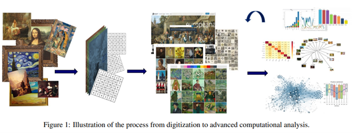

How Does it Work?
The generator used “text-to-image” method where the user typed down words (or prompts) and select options (usually art style or size), they visually want the image to look like. Then the computer will bound the prompts together along with the selected options to create AI art to however they think it will look like. The program is trained to collect and used existed artworks (posted arts or provided arts by the inventor) to teach themselves to distinguish between art styles and practices. Once they have learned everything from the given artworks, it will take in the knowledge and apply them onto producing new artworks based on the style or techniques (Lang and Ommer, 2019).
The last decades, the online art collections increased due to the wide-ranging digitalisation efforts providing access for everyone to view the artworks located in numerous museums or art galleries around the world. The accessibility of gathering digital artworks initiated interdisciplinary research perspectives. The physical art and its digital version are encoded and linked to similar complicated structure of information despite being in dissimilarity material modes. Just like how you can inspect background information from the painting that would be useful for art historian, you are also able to inspect digital painting containing undiscovered potential information.
The primary purpose of digitalised missions is normally granting accessible and discovery to massive collections of digital artworks. However, these collections are only requirement at the beginning for applying advanced computational methods and new potential research (Cetinic and She, 2021). 
Here is a diagram to show the process of “art collections” from digitization to advanced computational analysis. It began from collecting many available arts online or from the user’s imported arts then the computer scanned the arts into quantitative analysis, allowing the computer to measure. Then it obtained the information and visualisation through computation methods, (“adopt a distance viewing” or a “close reading approach”). At the end of the process, the results been collected which are used to improve the functionalities of sources and collections by increasing advanced methods of content discovery (Lang and Ommer, 2019).
There are two ways to use the computational methods which are “adopt a distance viewing” or a “close reading approach”. Distance viewing inspects massive collections by focusing on one aspect or any similar features which enabled them to create statistical visualizations. And close reading is a focused on one specific area of certain work or art piece to address the issues (usually visual stylometry or computational artist authentication) (Cetinic and She, 2021).